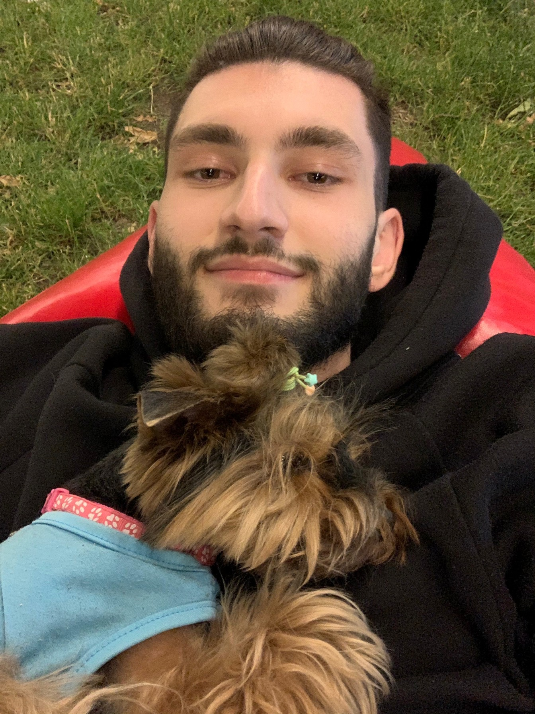

Сергей Бобок. Начинающий фронтенд разработчик.
Обо мне
Родился в Молдове, город Кишинев. 22 года. Сейчас живу в Германии.
Образование
Имею Средне-специальное образование, специальность бухгалтер
Учусь в универе
Опыт работы
По своей специальности присутствует. В сфере веб-разработки нет..
Хобби
Определенных увлечений нет, но люблю посещать новые места
Как я становился разработчиком
Сначала хотел создать сайт для определенной цели. Использовал CMS wordpress. А потом, заинтересовался созданием сайта с нуля. Вот так и пошло.
- 20 октября начал строить сайт на WordPress
- 30 октября стал изучать html самостоятельно
- 5 ноября начал искать платформу для обучения
Контакты
Телефон: 015222120206
Почта: srjbbc@gmail.com
Вконтакте: Nexa Canoferatte